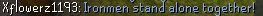
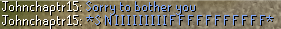
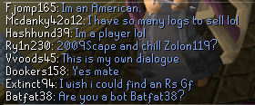
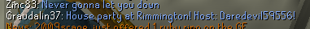

<div id="content">
<div id="article">
<div class="sectionHeader">
<div class="left">
<div class="right">
<h1 class="plaque">
                                    Adventure Bots
                                </h1>
</div>
</div>
</div>
<div class="section">
<div class="article_theme_1">
<div class="article">
<div class="topshadow">
<div class="bottomborder">
<div class="leftshadow">
<div class="rightshadow">
<div class="leftcorner">
<div class="rightcorner">
<div class="bottomleft">
<div class="bottomright">
<div class="links"> </div>
<br class="clear"/>
<div class="headings">
<span class="headertitleleft"><span class="headertitleright">Adventure Bots</span></span>
</div><br/>
<p style="font-size: 12px;">
    Bots! They were everywhere when we played the game. It at times made the game feel lonely and other times 
    it was just outright annoying! especially when they stole your tree that you're chopping. Regardless of 
    how annoyed you got with them deep down they were still part of your childhood game. It is no secret that 
    2009scape is aimed around a forever mindset. What this means is that it is geared to outlive our live server.
    Loneliness can happen both on Live and SP mode.  
</p>

<p> 

    Well, you are in luck! 2009scape, unlike other servers, have bots that inhabit the world. All different types, but 
    in this page we're going to discuss one particular bots called <b><i>Adventure Bots</i></b>

<p>  
 <b>Immersion</b> 
 <br>
 <br>
 As I stated before the game gets lonely. The live has a lower player base and singleplayer is just you. While we sometimes 
 have the best conversation with our ownselves? (no? just me?) it can feel like an empty world. Adventure bots go on adventures 
 as the name suggests. They wander in a bunch of locations where you wouldn't expect. 
 <br>
 <br>

<b>Exchange</b>
<br>
<br>

As I stated the bots run around 2009scape going on Adventures. In their Adventures they find trees to woodcut, monsters to kill, 
rocks to mine and fish to catch! They then in return sell to the grand exchange for an inflated price of 10% higher than the 
average price making the items super expensive but still creates an economy. Sounds bizzare! but with a forever kept in mind 
we are thinking about the singleplayer end or the lower player count remakes usually bring while planning these bots out. 
RS always had bots fill their economy tons of resources. 

<br>
<br>

<b>They can talk?</b>
<br>
<br>
The best part of the bots isn't the items they provide on the exchange. It is honestly the dialogue they say outloud. They have 
tons of dialogue and extra dialogue throughout the holidays. Here are some photos that can be found in the #bot-quotes channel 
in the official discord. 
<br>
<br>

 <br>
 <br>
 <br>


<br>
<br>

<b>Facts about Adventure Bots </b>
<br>
<br>
Adventure Bots have had a few reports made on them for botting by newer players. <br><br>
Adventure Bots were added November 18th, 2020 to 2009scape. <br><br>
Adventure Bots were written by Kermit using the new bot system written by Ceikry.
</p>
</p>
<h3>Update History</h3>
<br>
<b>25 January 2022 ( <a href="../../services/m=news/archives/2022-01-25.html">Update</a></b>)
<br>
<ul>
<li>Fixed issues with Adventure bot assembly and initial spawning into the game world.</li>
</ul>
<b>11 January 2022 ( <a href="../../services/m=news/archives/2022-01-11.html">Update</a></b>)
<br>
<ul>
<li>Fixed Adventure Bots pooling/stuck in Lumbridge after death.</li>
</ul>
<b>25 October 2021 ( <a href="../../services/m=news/archives/2021-10-25.html">Update</a></b>)
<br>
<ul>
<li>Added a few community favourites, ancient memes, moths, classic RS2 staples, God-specific dialogue, catgifs, and Rick Astley lyrics to the Adventure Bot dialogue pool.</li> 
<li>Added a few seasonal lines to the New Years, and Christmas dialogue pools for bots.</li>
</ul>

<b>12 July 2021 ( <a href="../../services/m=news/archives/2021-07-12.html">Update</a></b>)
<br>
<ul>
<li>Bots now use the GE price from an item's config if no other price overrides are specified.</li>
</ul>

<b>21 March 2021 ( <a href="../../services/m=news/archives/2021-03-21.html">Update</a></b>)
<br>
<ul>
<li>Expanded adventure bots dialogue and skilling capabilities greatly.</li>
</ul>

<b>02 December 2020 ( <a href="../../services/m=news/archives/2020-12-02.html">Update</a></b>)
<br>
<ul>
<li>Added Christmas Dialogue to the bots.</li>
</ul>   

<b>18 November 2020 ( <a href="../../services/m=news/archives/2020-11-19.html"> Update</a></b> )
<br>
<ul>
<li>Added to 2009scape.</li>
</ul>
</div>
<div style="margin-left: 6%;">
<tr>
<td colspan="2">
<div class="bold">Further Help</div>
                                                                        Need more help? Come chat with us!
                                                                        <ul class="further">
<li><a href="https://discord.gg/43YPGND">Discord</a>
</li>
<li>
<a href="https://matrix.to/#/#09scape-general:matrix.org">Matrix</a>
</li>
</ul>
<br/>
<br/>
</td>
</tr>
</div>
</div>
</div>
</div>
</div>
</div>
</div>
</div>
</div>
</div>
<div class="search">
<div class="searchtop">
<div class="bottombordershad">
<div class="leftshadow">
<div class="rightshadow">
<div class="topleft">
<div class="topright">
<div class="bottomleftshad">
<div class="bottomrightshad">
<div class="searchtext">
<p style="text-align: center;font-size:11px;font-weight:bold; margin-bottom: 0px;">

</p>
</div>
</div>
</div>
</div>
</div>
</div>
</div>
</div>
</div>
</div>
</div>
</div>
</div>